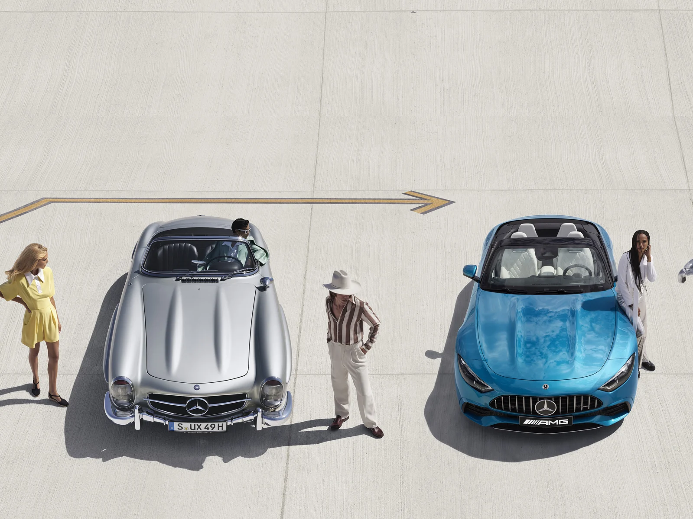
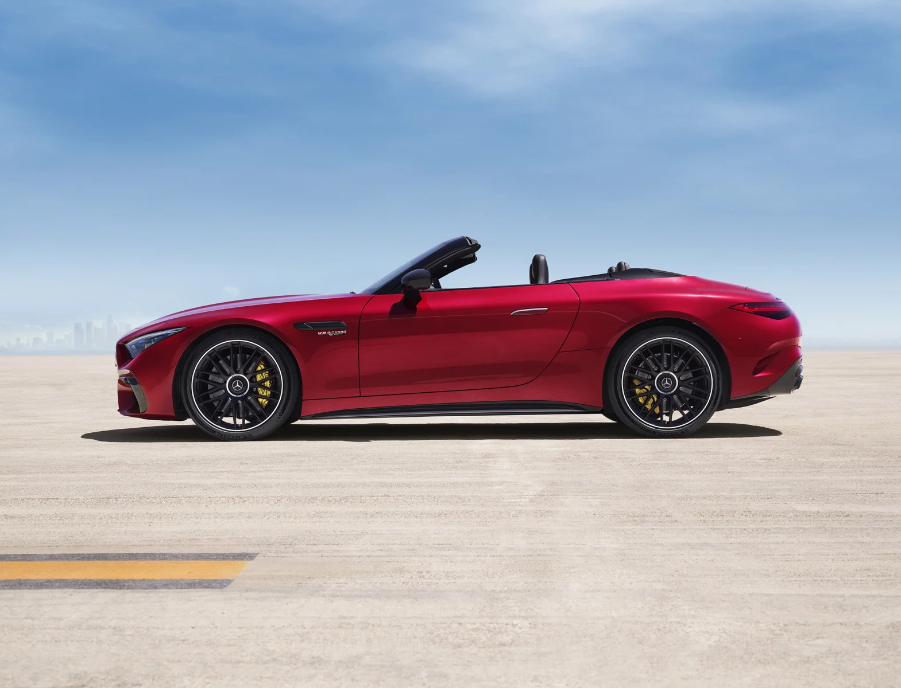
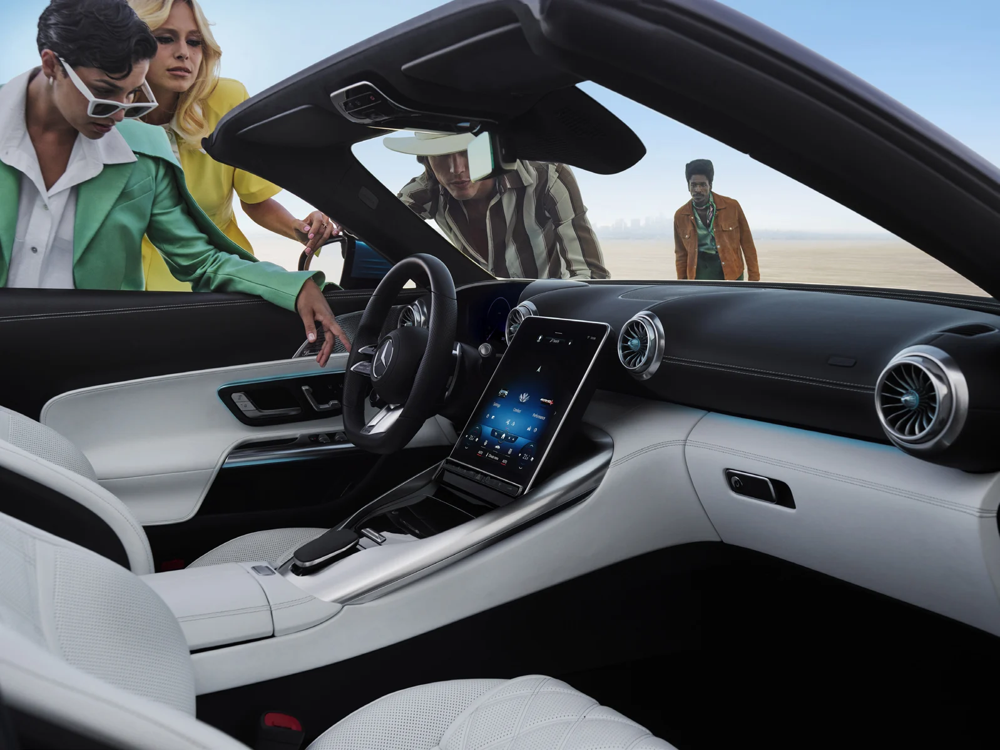
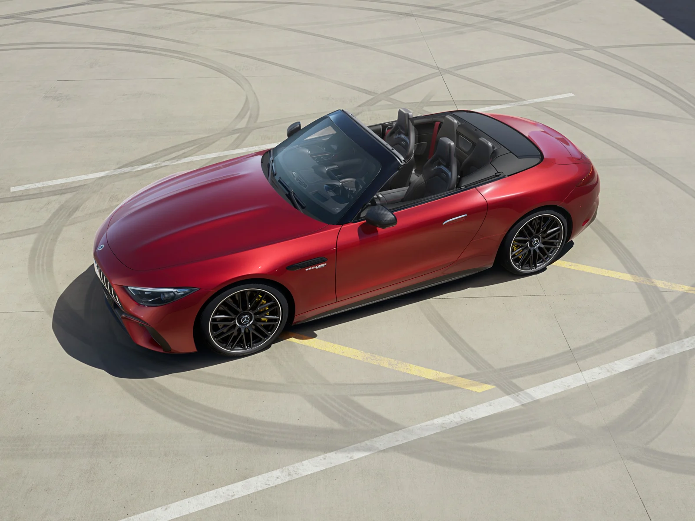

한호만 · 벤츠 고양 전시장
한호만 · 벤츠 고양 전시장권장 소비자가
확인 중2026.09.25 기준
전체 가격표 확인 ↗AMG · MY27
Mercedes-AMG SL의 트림 구성과 제원, 내외장 색상을 한곳에서 비교하세요. 가격·월간 구매 조건·공개 재고로 이어서 확인할 수 있습니다.
한호만 팀장 · 안내 갱신 2026.09.27
MY27 안내와 MY26 비교 자료를 구분해 제공합니다.

TRIM & PRICE
차량을 선택하면 구매 정보와 옵션·색상 안내가 함께 바뀝니다.
공식 가격이 확인되지 않은 구성은 별도로 표시합니다.
권장 소비자가: 2026.09.25 가격표 · 부가세 포함. 가격이 아직 확인되지 않은 트림은 이전 연식 가격으로 대체하지 않습니다.
BUYING YOUR MERCEDES-AMG SL
Mercedes-AMG SL 43
2026.09.25 기준
전체 가격표 확인 ↗현재 월과 선택 연식에 맞는 조건을 확인합니다.
구매전략리포트 ↗기준일과 색상 조합을 확인하세요.
선택 차종 재고 확인 ↗SPECIFICATIONS
차체 크기, 엔진과 주행 수치를 같은 연식끼리 비교하세요.
연식과 모델을 선택해 항목별 수치를 확인하세요. 세부 트림·휠·좌석 구성에 따라 실제 차량과 차이가 있을 수 있습니다.
카탈로그 참고 제원과 선택한 차량의 연식이 다를 수 있습니다. 미확인 수치는 다른 연식의 확정 수치로 표시하지 않습니다.
BenzDream · 한호만 | 원문에서 최신 안내 확인 ↗
COLOUR & MATERIAL
선택한 트림에 제공되는 색상을 표시합니다.
사진은 해당 차종 카탈로그의 원본 이미지입니다. 일치하는 사진이 없는 색상은 색상칩으로 표시하며, 화면 색상과 실제 도장은 다를 수 있습니다.
IN DETAIL



BENZDREAM ON YOUTUBE
영상 촬영 당시의 연식·구매 조건이 포함됩니다. 현재 조건은 위 구매 정보에서 확인하세요.
차종에 맞는 영상을 확인해 이곳에 추가하겠습니다.
BenzDream 채널에서 차종 검색 ↗이전 연식의 상세 장비와 비교 설명도 이어서 볼 수 있습니다.

YOUR MERCEDES-BENZ ADVISOR
한호만 팀장 · 벤츠 고양 전시장
차종 선택부터 구매 조건, 출고까지.